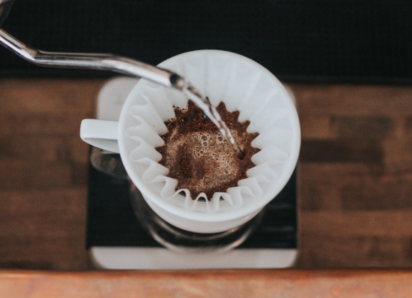

Brew Theory: Extraction, Strength, and Finding the Sweet Spot for Pour Over Coffee
2023-10-10
The Brew Theory of Pour Over Coffee
Why is it so tricky to brew a great pour over coffee? After all, at its heart,
making a pour over is a simple process—pouring hot water over ground coffee dissolves flavor and
aromatic compounds in the beans. The challenge lies in dissolving only the right kinds of
compounds in coffee—and in the right proportion. To make a perfect pour over coffee is to find a
coffee’s “sweet spot,” a balance of the extraction percentage and strength level we consider
most delicious.

Coffee Strength and Extraction
When it comes to understanding strength and extraction, we find it helpful to
compare coffee to a spice cupboard. Much in the same way spices are stowed away in a cupboard, an
array of delicious flavors—aka volatile and soluble compounds—are locked inside roasted coffee
beans. To be exact, coffee contains on average 30 percent soluble compounds and 70 percent insoluble
compounds. But like any cook’s cupboard, it also contains a handful of flavors we don’t want—or want
only in limited quantities—particularly bitter compounds that impart flavors of ash, tobacco, or
carbon. What’s so fun about making a pour over coffee is how much control it gives you in pulling
out exactly the right flavors at exactly the right ratio. It’s the Michelin-starred chef of coffee
brew methods.
Coffee Strength
The concentration or intensity of flavor in a cup is what we refer to as coffee
strength. On the palate, a coffee’s strength registers on a spectrum between watery and dense. In
scientific terms, it can be measured by the percentage of dissolved coffee to water, a measurement
we call the total dissolved solubles, or TDS.
For example, a well-made espresso has a TDS of between 9 and 20 percent coffee to water. By comparison, the more mellow pour over coffee has a much lower TDS of between 1 and 2 percent coffee to 98 to 99 percent water.
Strength is largely influenced by the amount of coffee you brew. In barista terms, this is referred to as the brew ratio or coffee dose. In lay terms, the more coffee you brew, the stronger the cup. At Blue Bottle, to set accurate brew ratios, we use gram scales to measure both our coffee and our water.
And we set individual brew ratios for all our coffees: We prefer our blends slightly stronger, to stand up to milk, so we generally brew them at 30 grams coffee per 350 grams water. We prefer our single origins more nuanced and expressive, so we “turn down the volume” a bit and keep their brew ratio slightly lower, at 22 to 24 grams coffee per 350 grams water.
If this seems like a lot to remember, a good way to assess a coffee’s strength is to judge its body. That is, the weight and feel of the coffee on your tongue. Does the coffee feel light like skim milk or heavy like whipping cream?
For example, a well-made espresso has a TDS of between 9 and 20 percent coffee to water. By comparison, the more mellow pour over coffee has a much lower TDS of between 1 and 2 percent coffee to 98 to 99 percent water.
Strength is largely influenced by the amount of coffee you brew. In barista terms, this is referred to as the brew ratio or coffee dose. In lay terms, the more coffee you brew, the stronger the cup. At Blue Bottle, to set accurate brew ratios, we use gram scales to measure both our coffee and our water.
And we set individual brew ratios for all our coffees: We prefer our blends slightly stronger, to stand up to milk, so we generally brew them at 30 grams coffee per 350 grams water. We prefer our single origins more nuanced and expressive, so we “turn down the volume” a bit and keep their brew ratio slightly lower, at 22 to 24 grams coffee per 350 grams water.
If this seems like a lot to remember, a good way to assess a coffee’s strength is to judge its body. That is, the weight and feel of the coffee on your tongue. Does the coffee feel light like skim milk or heavy like whipping cream?
Coffee Extraction
Picture a cup of tea: Steep it too little and it will taste like water. Steep it
too much and you have tar. Coffee behaves much the same way. Extraction is a measure of the quality
of the solubles in coffee, which emerge at different rates the longer you brew. Those rates are
influenced by time, temperature, and ratio of ground coffee to water. An underextracted coffee
tastes sour. An overextracted cup is overwhelmed with bitter, even burnt flavors.
Ground coffee contains at most about 30 percent soluble compounds; the remaining 70 percent are fiber and other compounds that water cannot penetrate. But if you dissolve all 30 percent, your cup will not taste good. In a properly extracted cup of coffee, only between 18 and 22 percent of the coffee’s solubles have dissolved.
In pour over coffee, extraction is shaped by pour rate and pour patterns. It’s also impacted by grind size. Grind your beans too fine and the water will pass too slowly through the coffee, extracting too many bitter compounds. Grind them too coarse and the water will rush past the best flavor compounds, leaving you with a coffee that tastes only sour, not sweet or radiant. Grind your beans just right, and the optimal flavor compounds will dissolve in the water, leaving the undesirable flavors behind.
If this all seems like a lot to remember, a good way to assess extraction is by the coffee’s finish. Once you’ve finished a cup of coffee, pay attention to whether or not you can still experience its flavors. We often describe finish in terms of duration, how long the taste lingers, and texture, the feel of it in your mouth. Is the finish fleeting or does it linger? Does it feel smooth or rough?
Ground coffee contains at most about 30 percent soluble compounds; the remaining 70 percent are fiber and other compounds that water cannot penetrate. But if you dissolve all 30 percent, your cup will not taste good. In a properly extracted cup of coffee, only between 18 and 22 percent of the coffee’s solubles have dissolved.
In pour over coffee, extraction is shaped by pour rate and pour patterns. It’s also impacted by grind size. Grind your beans too fine and the water will pass too slowly through the coffee, extracting too many bitter compounds. Grind them too coarse and the water will rush past the best flavor compounds, leaving you with a coffee that tastes only sour, not sweet or radiant. Grind your beans just right, and the optimal flavor compounds will dissolve in the water, leaving the undesirable flavors behind.
If this all seems like a lot to remember, a good way to assess extraction is by the coffee’s finish. Once you’ve finished a cup of coffee, pay attention to whether or not you can still experience its flavors. We often describe finish in terms of duration, how long the taste lingers, and texture, the feel of it in your mouth. Is the finish fleeting or does it linger? Does it feel smooth or rough?
Finding a Pour Over Coffee’s Sweet Spot
The trick to any method of coffee brewing is to hit the sweet spot—to balance a
coffee’s strength and extraction percentage to achieve one delicious cup.
Now that you have an understanding of brew theory and the concepts of strength and extraction, we recommend you practice making a pour over coffee, perhaps altering the coffee-to-water ratio to see how flavors can either become more distinct (with more more water) or more opaque and textured, as happens with the addition of more coffee grounds. Notice if you have a preferred strength. Do your preferences depend on the kind of coffee you’re making, whether a lighthearted single origin or a hefty blend?
Play with the extraction quality, too, by honing your pour over coffee skills, from dialing in the grind to pour technique. Somewhere in this quest you’ll start to notice that your coffee becomes more resonant, with every aspect of it coming into clearer focus. Like notes played on a tuned-up piano, individual flavors start to ring, until the entire coffee, from its mouthfeel to its finish, hums like a chord progression.
Now that you have an understanding of brew theory and the concepts of strength and extraction, we recommend you practice making a pour over coffee, perhaps altering the coffee-to-water ratio to see how flavors can either become more distinct (with more more water) or more opaque and textured, as happens with the addition of more coffee grounds. Notice if you have a preferred strength. Do your preferences depend on the kind of coffee you’re making, whether a lighthearted single origin or a hefty blend?
Play with the extraction quality, too, by honing your pour over coffee skills, from dialing in the grind to pour technique. Somewhere in this quest you’ll start to notice that your coffee becomes more resonant, with every aspect of it coming into clearer focus. Like notes played on a tuned-up piano, individual flavors start to ring, until the entire coffee, from its mouthfeel to its finish, hums like a chord progression.